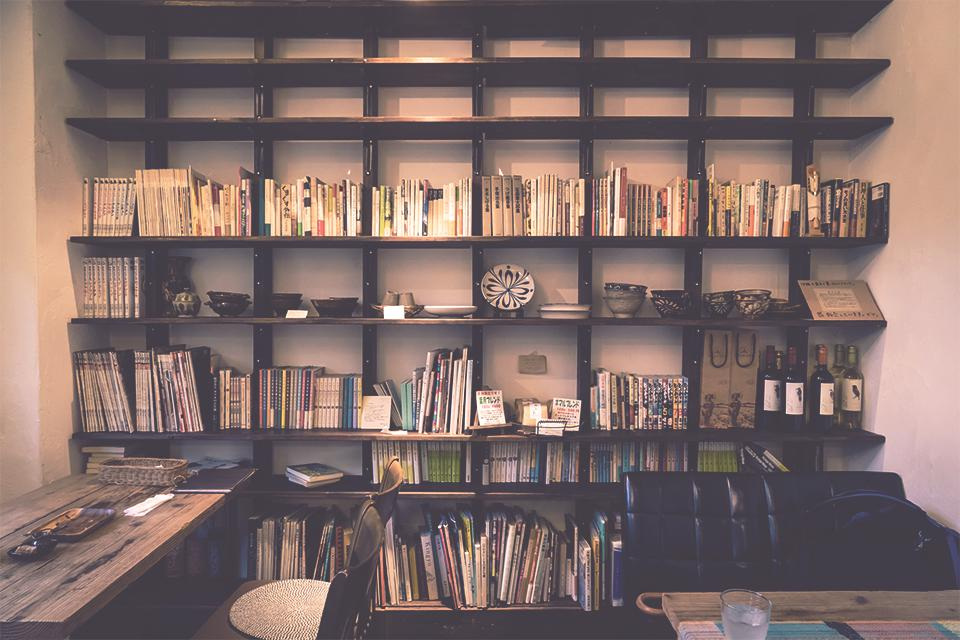
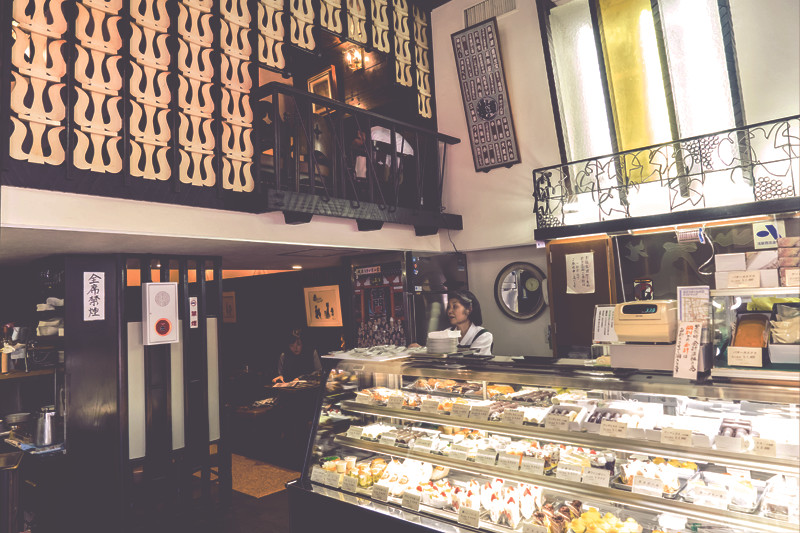

Seat Mania / シートマニア
3-1-9 Tokyo-to Shibuya-ku Shibuya 東京都渋谷区渋谷3-1-9
Unplan Lounge / アンプラン ラウンジ
23-1 Tenjicho Shinjuku-ku Tokyo 東京都新宿区天神町23-1
Nemaru Cafe / ネマルカフェ

1-23 Suidocho, Shinju-ku, Tokyo 東京都新宿区水道町1-23 石川ビル2F-2
Okinawa CanColor / 沖縄カンカラーカフェ
78 Enokicho, Shinjuku-ku, Tokyo 東京都新宿区榎町78
Cielo y Rio / シエロイリオ
2-15-5 Kuramae, Taito-ku, Tokyo 東京都台東区蔵前2-15-5
Angelus / アンジェラス

1-17-6 Asakusa, Taito-ku, Tokyo 東京都台東区浅草1-17-6